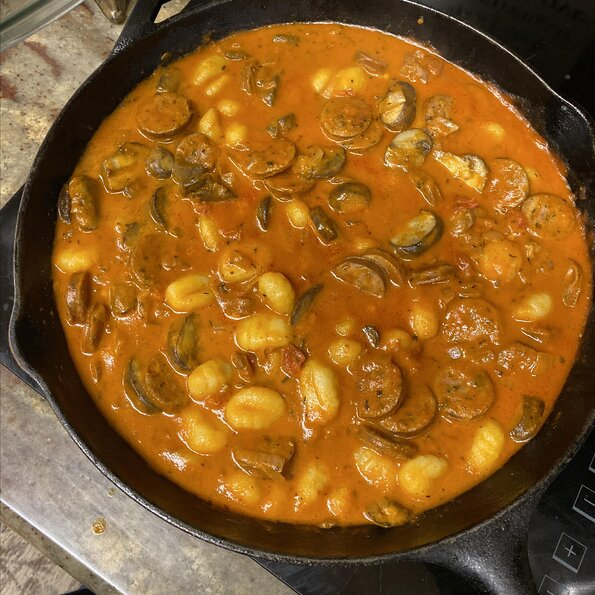

Recipe for Gnocchi with Sausage and Champignon

Ingredients
2 tablespoons olive oil, divided
3 (3.5 ounce) links hot Italian sausage, sliced
1 (8 ounce) package baby portobello mushrooms, sliced
2 cups vodka marinara sauce
sea salt and ground black pepper to taste
1 (16 ounce) package fresh gnocchi
1 tablespoon freshly grated Parmesan cheese, or to taste
Recipe steps:
Step 1
Heat 1 tablespoon olive oil in a large skillet over
medium-high heat. Add sausage and cook,
stirring occasionally, until browned, 5 to 7 minutes.
Remove sausage and set aside,
leaving residual oil in the pan.
Step 2
Add mushrooms, onion, and remaining olive oil to the same skillet.
Cover and cook over medium-low heat, stirring occasionally,
until cooked down, about 15 minutes.
Return sausage to the skillet; add vodka sauce,
thyme, salt, and pepper and allow sauce flavors to meld,
about 10 minutes.
Step 3
Meanwhile, bring a large pot of lightly salted water to a boil.
Cook gnocchi in the boiling water until they float to the top,
2 to 4 minutes. Drain and season with salt and pepper.
Return to index